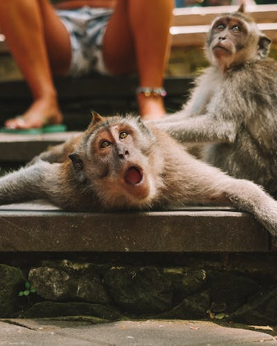
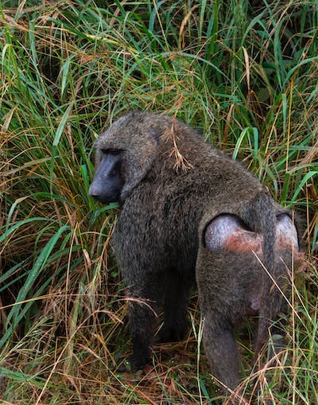

Baboons are primates comprising the genus Papio, one of the 23 genera of Old World monkeys.
Baboon's Characteristics
Baboon mating behavior varies greatly depending on the social structure of the troop. In the mixed groups of savanna baboons, each male can mate with any female. The mating order among the males depends partially on their social ranking, and fights between males are not unusual.
Overall baboons are great animals just look at this photo
For additional baboon content just click here